git学习
标题的从0到1只是对我来说,,
我是跟着[liaoxuefeng.com]网站上面的git教程学习的。强烈推荐这个网站，还可以学习java、js等！
我自认为这篇博客前后逻辑关系强，前面没看懂的，后文大概率会提及！所以不要担忧。
背景故事就不说了，比如这只是大佬两周用C开发出的…
然后本文内容偏向于基础，一些高级操作我也不会（而且大概率用不到）同时原网站一些知识我并不会都学，但是同时也补充了一些比较新颖的知识；
同时，相关命令辞典：git-cheat-sheet
安装Git
ubuntu：apt安装即可
windows：在git官网下载安装程序安装即可
安装成功后，输入git -v就能看到版本号，为了方便测试，本次教程我会在ubuntu虚拟机上运行。同时需要注意，执行命令要看当前目录在哪里，防止出现错误！可以用pwd命令查看当前命令行工作目录，确保这个目录正确。
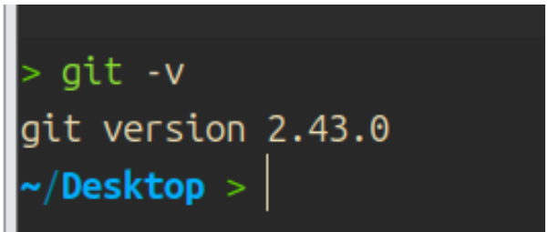
创建版本库
版本库通俗来说就是一个仓库，分布式管理的一个特色就是每台计算机都有一台完整的版本库。这里引用一下廖雪峰的话：
什么是版本库呢？版本库又名仓库（Repository），你可以简单理解成一个目录，这个目录里面的所有文件都可以被Git管理起来，每个文件的修改、删除，Git都能跟踪，以便任何时刻都可以追踪历史，或者在将来某个时刻可以“还原”。
创建版本库
新建一个版本库是很方便的，首先第一步，新建一个空目录。
第二步，为了让这个目录转换“身份”，变为git仓库，我们需要输入命令：git init
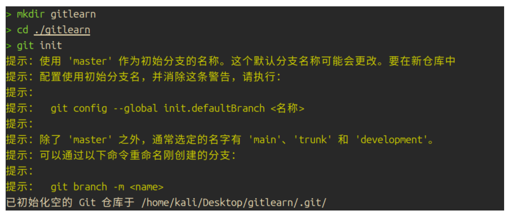
初始化成功后，会有一些提示信息，当然这不是报错信息，可以通过修改配置文件取消提示信息。
此时，目录下多出一个隐藏文件夹：.git，保存和git相关的信息，最好不要动
添加文件到版本库
git只能跟踪纯文本文件的修改，假如是二进制文件（比如图片、word文档）至多只能记录大小的变化，因此我们要特别注意这一点。
而且，如果编辑纯文本文件，需要注意编码问题，最好是使用UTF-8。另外，建议使用VS CODE来编辑，因为自带的记事本可能会自动往里面加一些别的东西。
第一步，新建一个文件（就是准备一个要加入到git版本库的文件）
第二步，使用git add，让这个文件添加到git仓库。这一步可能不会有任何提示，但是这就说明成功了。
第三步，使用git commit -m ‘xxx’，提交修改
简单解释一下
git commit命令，-m后面输入的是本次提交的说明，可以输入任意内容，当然最好是有意义的，这样你就能从历史记录里方便地找到改动记录。
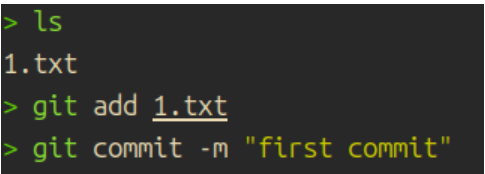
如果提示以下内容：
1 | 作者身份未知 |
就运行git config --global user.email "you@example.com"设置用户邮箱，运行 git config --global user.name "Your Name"设置用户身份。因为每次提交都需要知道到底是谁提交的。当然，对于身份的验证，肯定有对应办法，学习到后面就知道了
这样就不会失败了，会提示：
1 | [master （根提交） 064bae7] first commit |
这就说明成功了。需要注意，这就类似于一个容器，先Add添加进去，再commit（可add多个文件，一次性commit）
所以这也是add和commit分开的原因。
本地仓库–初步领略她的魅力
现在想必大家都学会了怎么简单用git，接下来就领略git独特的魅力
首先我们修改一下上文add的文件，但是并不上传，然后输命令git status看看会发生什么事情
1 | > git status |
我ubuntu是中文环境，因此内容是中文，假如是English，实际上差不多，主要是提示我们：
- 当前在哪个分支（后面会了解）
- 是否有文件被修改，和对应的git提交情况
假如我们想要了解到底修改了什么内容，则可用git diff（对于二进制文件，最多提示文件不同）
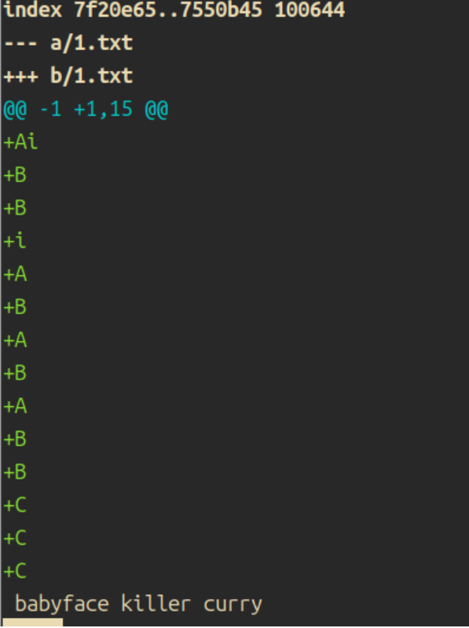
如上所示，我们新建了几行，他会打印出来。这时候我们就可以放心提交了，假如我们输入git add，这时候git status会变化为：
1 | 位于分支 master |
commit之后，status会提示：这是一个干净的工作区，意思是没有文件被修改了，什么都很美好。
版本回退
git一个功能就是版本回退，每一次git commit都相当于游戏的新建存档点，我们可任意读档重来。
现在我们想要回退版本，为了确保不会回退错，我们使用命令git log查看提交日志
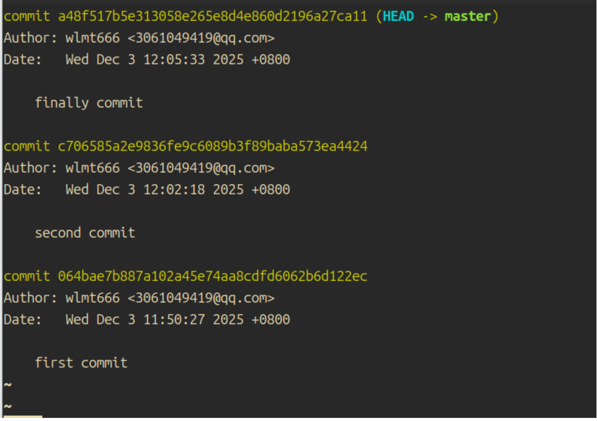
可看到，我一共提交过三次commit，每一次commit相关的说明都已经附加在了下方（比如First、Second），相应的还有作者和日期，便于我们查找对应的分支。加上参数：pretty=oneline只会显示commit id和对应的注释，更加简洁。注意，commit id这样设计是为了避免多人用一个id的重复情况。每个人的应该是不同的。
现在我们想要退到某一个分支，该怎么操作呢？
首先，Git必须知道当前版本是哪个版本，在Git中，用
HEAD表示当前版本，也就是最新的提交1094adb...（注意我的提交ID和你的肯定不一样），上一个版本就是HEAD^，上上一个版本就是HEAD^^，当然往上100个版本写100个^比较容易数不过来，所以写成HEAD~100。
这里认识到一个新的命令 ：git reset他接受以下三个参数：
| –hard | –soft | –mixed |
|---|---|---|
| 上一个版本的已提交状态 | 上一个版本的未提交状态（最新版本的文件会变为”暂存“也就是git add后） 再次提交就是新版本，相当于重写C版本 |
上一个版本的已添加未提交状态 |
我们用hard，后面跟上hard^^或者hard~2就能恢复到我们的第一次已提交状态
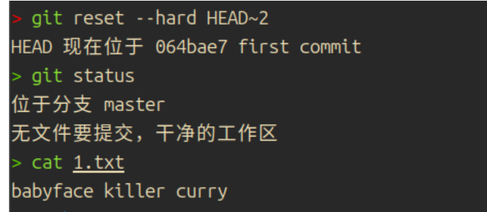
这时候看git log，已经只剩下一个log了。想回退回去？hard后面除了跟HEAD，还能跟commit id（前几位即可，能唯一确定一个commit就够了）
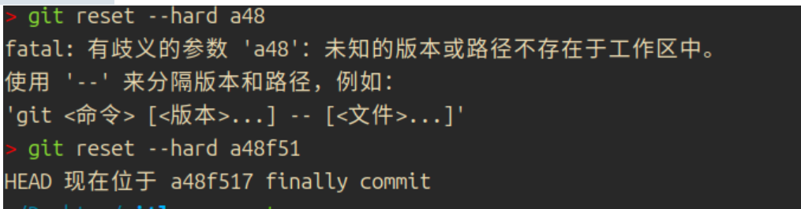
但是id至少要输入4位才可以！一般7位够用，我这里六位就确定了。看status，显然这是已提交的状态。
有的人可能会沮丧地找commit id，不要灰心！git开发者显然考虑到这个问题，所以设计了另一个命令：git reflog可查看我们执行过哪些git版本控制命令，我们在这里面能找到commit id
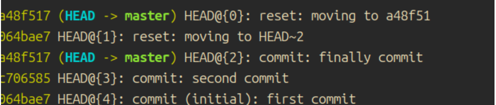
补充一点，为啥git版本回退这么快：图是偷的廖雪峰大佬
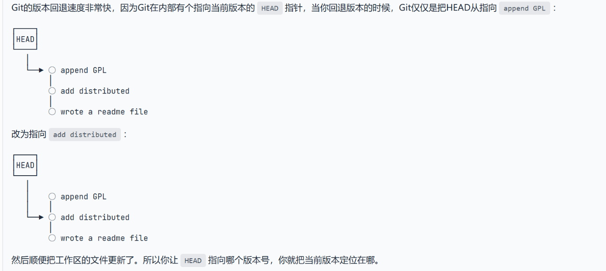
工作区和暂存区
上文的表格提到了暂存区，接下来就来说一下
我们可简单理解暂存区类似于缓冲区，每次git add，只不过是把文件存放在了暂存区，之后commit一次性提交。
在.git文件夹，就有两个重要的东西：一个是暂存区，一个是分支(后面会说到)，这个分支额外有一个指向它的头指针HEAD。
大概就是这样子的结构：下图的master是默认分支master
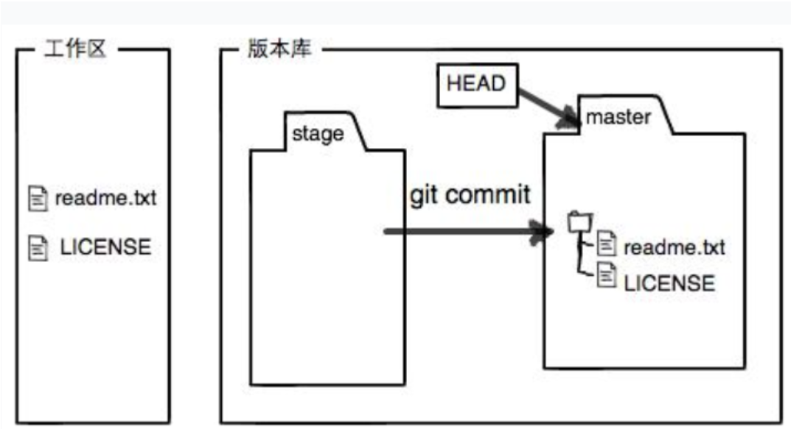
管理修改
现在有一个特别重要的概念：管理修改。
git严格意义说管理的是修改，而并不是文件。什么是修改？文件的上传，删除，文本的字符更改，等都是修改。
这需要结合上文的暂存区理解，就是修改必须提交在暂存区，commit后才能是修改后的文件，假如git add后，再次修改了那个文件，那只能说是只提交git add后的文件，下面做一个实验：
首先新建一个2.txt，内容随意。
接下来git add，然后修改txt，然后再commit，我们这时候看状态：
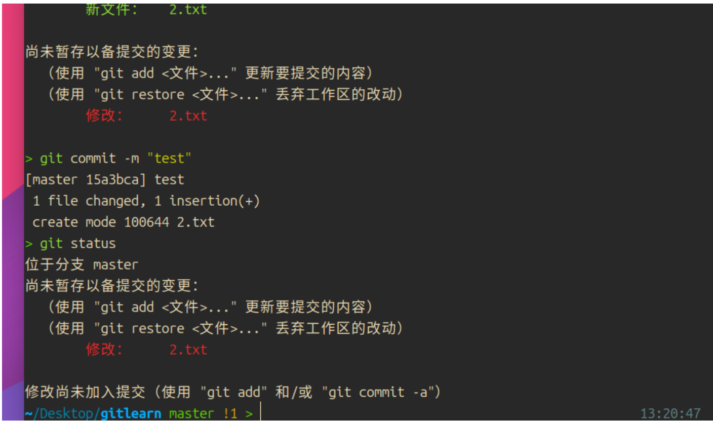
还是修改！也就是说只是把暂存区的修改提交了而已。解决办法也很简单，再次git add修改的文件，或者干脆先commit一次再commit一次
撤销修改

看，她提示我们只需要用restore（git restore）就可以丢弃工作区的改动
实际上，checkout（git checkout）也可以，总的来说，这两个命令适合还没有放在暂存区的修改。
假如修改已经放在了暂存区，就可以采取另一种办法
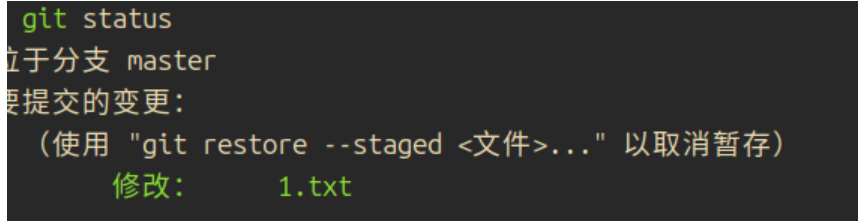
我们可按照他的提示，用这个命令取消暂存，再用上文提及的办法
也可以采取另一种办法：
git reset HEAD <file>
这样可直接撤销修改。暂存区的文件也不见了。
如果已经commit了，那只能回退版本了。
总结一下：
1.不在暂存区，用git checkout或者git restore
2.已经放在暂存区，用git reset HEAD <文件名> 或者 git restore --staged
3.已经commit，版本回退
(上面修改只是针对于本地，假如修改已经推送到远程，情况会有所变化，后文再提及！)
删除文件
假如我们直接在工作区删除，不出意外git status会提示我们哪些被删除了，就和下面一样：
1 | 位于分支 master |
想要在git也删除，则需要git rm <文件名>
如果工作区误删，则可通过git checkout --文件名进行还原
（checkout本质是用版本库里的版本替换工作区的版本，上文checkout删除修改的原理也显而易见，版本库没有存储修改，自然替换后就没了修改，大家结合管理修改这一节的内容理解理解）
远程仓库–初探git魅力
现在我们只是本地仓库玩的很溜，但是远程仓库却并不知道，这也妨碍我们进一步了解github、gitee等在线平台。
首先需要注意一点，github支持ssh协议，通过这个来确定我们的身份，因此我们需要先生成密钥，然后在github配置，才能进行通信。
本地生成密钥文件：（ubuntu为例）
ssh-keygen -t rsa -C "YOURS@EMAIL"
我们只是个人使用，不必关心密码等复杂操作，一路回车即可。会生成一个.pub公钥文件，这个我们要放在github上，另一个是私钥，保存好！
随后我们进入github，点击New SSH key把公钥输进去就好，这个是我的博客的公钥。
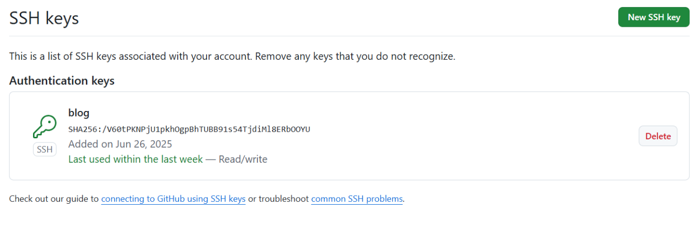
随后点击Create a new repository，搞一个云仓库
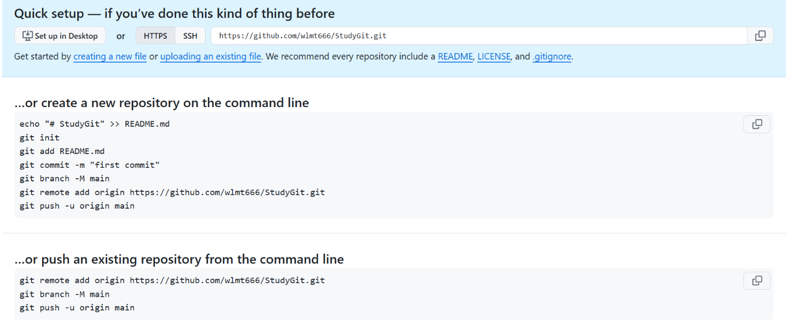
他就会教我们怎么把本地的仓库放在github，我们已经有一个仓库在本地，选择下面的那种方法即可。
origin是一个默认值，因为关联一个远程库时必须给远程库指定一个名字，origin就是约定俗成的。首先运行这个代码，添加远程仓库
git branch -M main和分支相关，我们可以先不输入这个命令
接下来输入 git push -u origin master，这个就是推送的核心命令 origin代表远程仓库名字，master代表分支。
由于远程库是空的，我们第一次推送
master分支时，加上了-u参数，Git不但会把本地的master分支内容推送的远程新的master分支，还会把本地的master分支和远程的master分支关联起来，在以后的推送或者拉取时就可以简化命令。
注意，github现在登陆方法是，用户名输入自己的，密码需要输入token，在这里生成token！
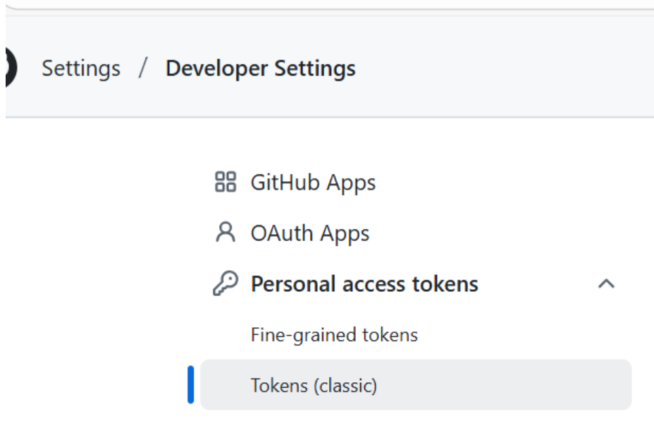
生成token不要忘记勾选repo:下面的所有内容，不然没有权限。成功之后，应当如下所示，然后我们在远程仓库就可以看到我们推送的内容。
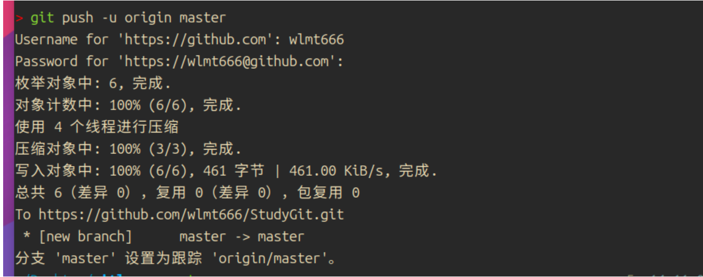
使用git remote -v可查看远程仓库列表，git remote rm可以根据名字删除远程仓库。
克隆仓库也十分简单，git clone即可，一般在github仓库页面都给给出命令，复制即可。
分支管理
创建与合并分支
git对于分支这一块，只需要理解指针即可理解通了。
强烈建议这一块阅读廖雪峰哥的git教程，真的太详细了。我也不敢说能说明白。
在前面我们知道HEAD指向的是master，这是因为HEAD指向的是当前分支，因为当前分支是master，所以HEAD指向的是MASTER。
因此我们只需要知道，不同的分支只是对应着HEAD指针指向的不同，即可。这也解释了git为什么不同分支切换这么容易，因为只需要切换指针就可以。
盗用廖雪峰大佬的图片：
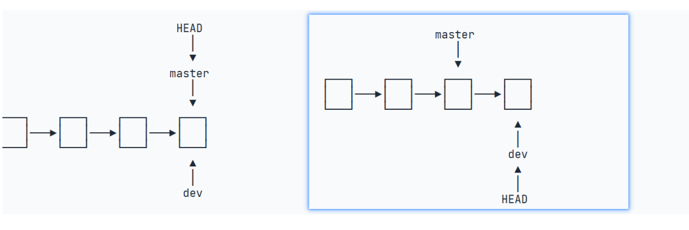
接下来我们用具体的例子来学习git
创建分支：
1 | > git branch dev |
这两条语句相当于git checkout -b dev
删除的话也很简单，只需要branch后面加一个参数-d ，如git branch -d dev 当然不要打成-D，这是强制删除
现在我们输入git branch，就可以看到所有分支，标注*的是当前分支，如下所示：
1 | * dev |
实际上，checkout不太好理解（因为替换文件也是他）git还有一个专门来切换分支的语句，git switch。使用方法也很简单，切换到master只需要git switch master。如下：
1 | > git switch dev |
（git switch -c表示创建并且切换）
在这分支下面，我们进行新建一个文件，并将这个修改提交给dev分支。
1 | touch dev.txt |
现在切回到master分支，看看有什么变化。
1 | git checkout master |
可以看到，不同分支之间的修改互不干扰，这正是分支的魅力，可让不同的人，工作在不同的分支上，到时候只需要合并分支就好了，大家修改的代码都会整合在一起。（有冲突怎么办？后面会讲）
git merge命令用于合并指定分支到当前分支。在这个情况之下，我们只需要git merge dev如下所示：
1 | git merge dev |
这里提示我们有一个dev.txt修改被提交了，而且是Fast-forward模式。下面大家可以用删除分支命令删除一下dev分支试试。
解决冲突
上文提到了Fast-forward模式，事实上很多情况下直接合并可能会存在冲突。什么情况下会存在冲突呢？举个例子大家就知道了
我们新建一个分支，修改1.txt的第一行，并且提交
接下来，我们在master分支上，依旧修改1.txt第一行，提交
可以看到，git还会提示我们当前分支的修改超前了云仓库的修改。
1 | git switch master |
现在，我们就遇到了麻烦，直接合并会出问题。现在的架构大概如下
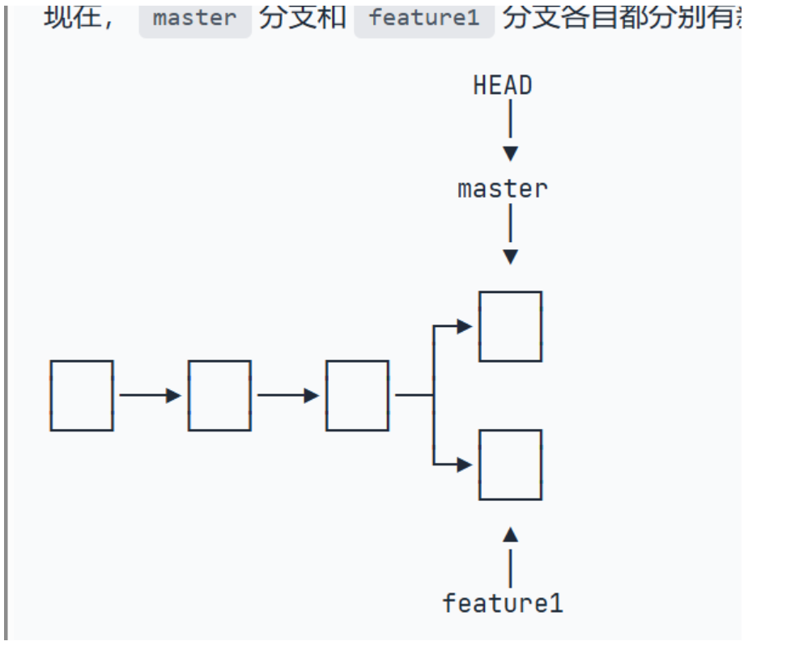
我们不能直接合并了。因为存在两个分支修改同一处，直接合并会报错
1 | git merge dev |
贴心的是，他还会在文件中告诉我们HEAD（即当前分支）和dev冲突在哪里，并且使用<>标注，===分割
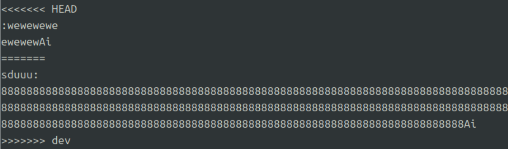
我们在这里删除，或者修改即可。总的来说就是避免冲突，这里我把HEAD修改的删掉，随后再次提交，并且合并
现在就没有冲突了。可以使用git log –graph查看分支合并图（看最左边红绿线条）
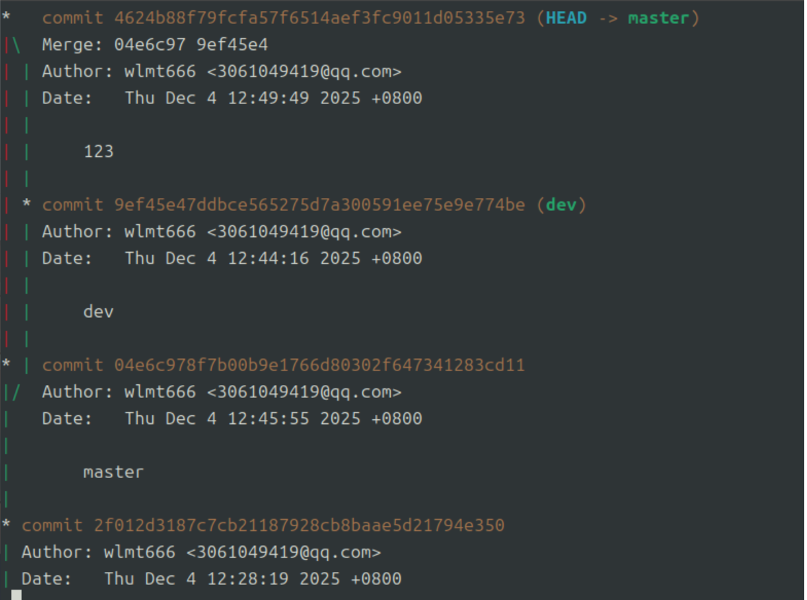
分支管理策略
前面说到的Fast-forward模式，删除分支的时候，和这个分支相关的信息也一并被抹去了。
解决办法也很简单，我们在合并的时候加上--no-ff参数即可
git merge --no-ff -m "描述" dev
这时候，分支看起来就像这样：
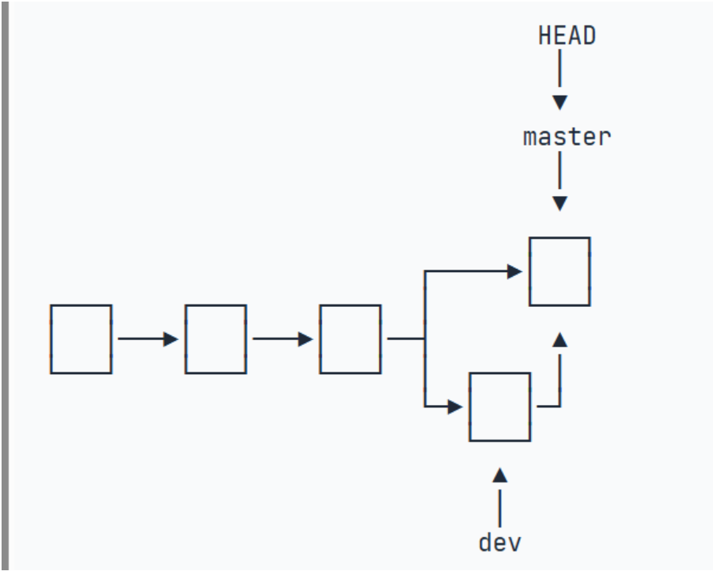
不得不说，这图片真的是太详细了！
下面是实操代码，供大家参考：
1 | git merge --no-ff devb -m "my first try" |
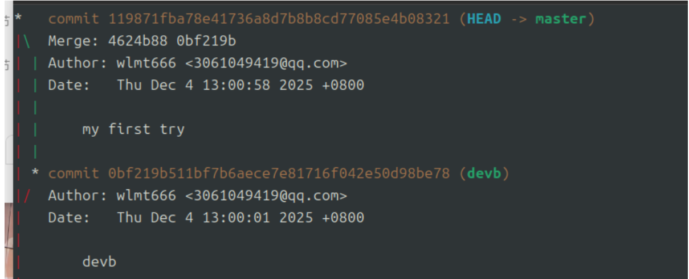
现实中，master分支一般是不能动的（只发布成品）因此开发大多在dev分支，每个人修改之后，把自己的分支提交合并到dev上面。
Bug分支
在Git中，由于分支是如此的强大，所以，每个bug都可以通过一个新的临时分支来修复，修复后，合并分支，然后将临时分支删除。
但是，现实中当然不存在这么美好的事情，就拿以下情况举例：
我们当前分支的工作还在继续，而且不能马上commit，但是现在必须新建一个临时分支，类似的这种需要临时保存当前工作区的情况怎么办呢？
现在，我们可以用git stash“储藏”当前工作区，然后我们再输入git status，惊奇的发现当前工作区已经干净得很：
1 | vi 1.txt |
恢复文件的两种办法：
1.应用–>删除
git stash applygit stash drop
2.直接pop
git stash pop
1 | git stash pop |
相应的，git cherry-pick commit号 可把某个commit的东西“复制”过来
标签管理
在哪个分支，就只能给哪个分支的commit打标签
使用命令：git tag就可以打标签。
git tag <name> 默认是给最新的commit打标签
（删除的话是 git tag -d <name>）
git tag <name> commitID给指定的commit打标签
git show <tagname> 查看指定tagname的信息
现在，我们push就可以直接输入标签了：git push origin v1.0 推送v1.0这个标签git push origin --tags推送所有尚未推送的标签
如果标签已经推送到远程，要删除远程标签就麻烦一点，先从本地删除：
2
Deleted tag 'v0.9' (was f52c633)然后，从远程删除。删除命令也是push，但是格式如下：
2
3
To github.com:michaelliao/learngit.git
- [deleted] v0.9要看看是否真的从远程库删除了标签，可以登陆GitHub查看。
使用github、gitee
github的fork是复制一份到自己仓库，我们把复制的仓库克隆到本地，如果修改了一些代码，就可以发起一个pull request给原仓库，可能人家就会接受你的修改。
gitee速度比github快（在国内）因此我们可一个仓库上传到两个平台，只要remote的名字不一样即可。
完结撒花，后面的自定义git等内容由于我暂时用不到，所以也不再更新这个。
再次感谢廖雪峰的博客，让我入门，剩下的就是俗话说的“师傅领进门，修行在个人”了